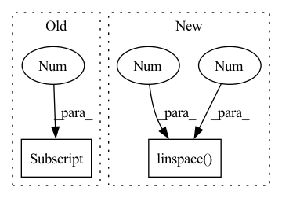

Pattern ID :17793
Before Change
"""
grid_list = tf.meshgrid(np.arange(0, x), np.arange(0, y))
return tf.cast(tf.stack([grid_list[0], grid_list[1] ], -1), tf.float32)
def concate(x:List[tf.Tensor],axis=1):After Change
grid_list = tf.meshgrid(np.arange(0, x), np.arange(0, y))
if normalized_coordinates==True:
grid_list = tf.meshgrid(np.linspace(0 , 1 , int(x)) ,np.linspace(0, 1, int(y)))
return transpose(tf.cast(tf.stack(grid_list, -1), tf.float32),[1,0,2])
In pattern: SUPERPATTERN
Frequency: 3
Non-data size: 2
Instances Fragment ID: 58536813
Project Name: allanyiin/trident
Commit Name: c4e9851c4c718f74ab3a6ab77899162d020d7ee5
Time: 2020-05-09
Author: allan@asiaminer.com.tw
File Name: trident/backend/tensorflow_ops.py
M Class Name: AnonimousClass
N Class Name: AnonimousClass
M Method Name: meshgrid(4)
N Method Name: meshgrid(4)
M Parent Class:
N Parent Class:
M File Name: trident/backend/tensorflow_ops.py
N File Name: trident/backend/tensorflow_ops.py
M Start Line: 641
M End Line: 643
N Start Line: 1195
N End Line: 1199
Before Change
for g in optimizer.param_groups:
g["lr"] = curr_lr
else:
curr_lr = lr_schedule[-1]
for g in optimizer.param_groups:
g["lr"] = curr_lr
return history, lr_history
After Change
def train(network):
loss_schedule = np.linspace(0.9 , 0.99 , num=3)
curr_stage = 0
curr_lr = 1e-3
lr_history = []
history = [] Fragment ID: 58536812
Project Name: neurotorch/neurotorch
Commit Name: 1448822fbe5f5b55b9f4434da75c983e31f11bf8
Time: 2022-08-06
Author: 50332514+JeremieGince@users.noreply.github.com
File Name: applications/time_series_forecasting_spiking/ts_pred_with_lif_autoencoder.py
M Class Name: AnonimousClass
N Class Name: AnonimousClass
M Method Name: train(1)
N Method Name: train(1)
M Parent Class:
N Parent Class:
M File Name: applications/time_series_forecasting_spiking/ts_pred_with_lif_autoencoder.py
N File Name: applications/time_series_forecasting_spiking/ts_pred_with_lif_autoencoder.py
M Start Line: 119
M End Line: 148
N Start Line: 123
N End Line: 146
Before Change
def craft(self, raw_bytes: bytes, doc_id: int, *args, ** kwargs) -> List[Dict]:
results = super().craft(raw_bytes, doc_id)
if len(results) > 1:
results[0] ["weight"] = 0.5
avg = 0.5 / (len(results) -1)
for result in results:After Change
class WeightSentencizer(Sentencizer):
def craft(self, raw_bytes: bytes, doc_id: int, *args, ** kwargs) -> List[Dict]:
results = super().craft(raw_bytes, doc_id)
weights = np.linspace(1 , 0 , len(results))
for result, weight in zip(results, weights):
result["weight"] = weight
return results Fragment ID: 58536808
Project Name: jina-ai/examples
Commit Name: ce67d135189ee40a3c9ed02096723df07cadee93
Time: 2020-04-13
Author: xiong.ma@jina.ai
File Name: news-search/images/extractor/extractor.py
M Class Name: WeightSentencizer
N Class Name: WeightSentencizer
M Method Name: craft(3)
N Method Name: craft(3)
M Parent Class: Sentencizer
N Parent Class: Sentencizer
M File Name: news-search/images/extractor/extractor.py
N File Name: news-search/images/extractor/extractor.py
M Start Line: 9
M End Line: 17
N Start Line: 10
N End Line: 15